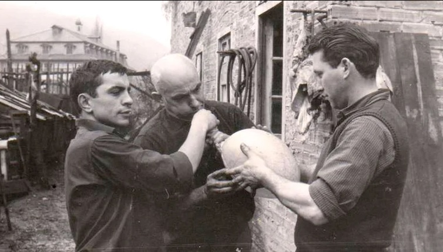
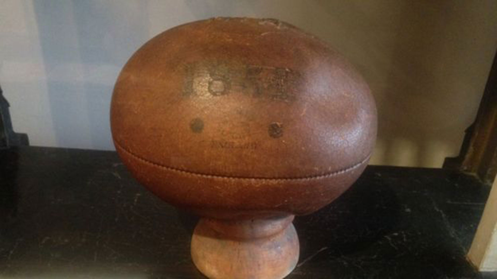
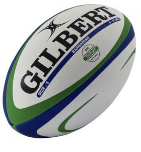

La historia del balón ovalado:
En la mayoría de los deportes los balones son redondos, sin embargo cuando vemos el rugby son ovalados. Hay dos historias que lo explican.
La primera hace referencia a la cual nos remitimos en el apartado anterior cuando en un terreno de juego de un colegio jugando un partido de fútbol un jugador lo agarró con sus manos y lo llevó a la meta. Desde aquí se comenzó a practicar el deporte y en su momento se jugaba de una manera agresiva de tal forma que en otro partido de la época un jugador agarró el balón y por temor a ser lesionado corrío tan rápido que cuando llegó lo depositó con tanta fuerza entre los palos que lo transformó en un balón ovalado.
La otra versión es menos romántica, se trata de un invento de un zapatero llamado William Gilbert que comenzó a fabricar balones a los jugadores locales, estudiantes de la rugby school, a la que asistia William Webb Ellis. Cabe destacar que su forma y tamaño se fue adquierendo con el tiempo.
El método del zapatero era estirar vejigas de cerdo frescas, y envolverlas en cuatro piezas de cuero ovoides. Luego de realizada la operación los dejaba secar. Estos balones son tan resistentes que su reputación traspasa los límites de la ciudad de origén del rugby y su trabajo fue tan reconocido que en 1851 presenta una de sus obras en la exposición universal de Londres.
Es importante destacar que las primeras reglas son redactadas en 1871, por la Rugby Football Union (RFU), las características del balón de rugby no están especificadas. Las vejigas de cerdo no son todas iguales, o sea que los balones nunca son idénticos. Hay que esperar a 1892, para que su forma y dimensiones sean fijadas.

Las vejigas de cerdo, que se utilizaban como cámaras, se inflaban mediante una boquilla de pipa.Foto tomada de Infobae
Una de las primeras pelotas hecha por Gilbert, exposición de 1851.Foto tomada de InfobaeDespués de más de 150 años de existencia la firma Gilbert pasó de la pequeña tienda de la ciudad de rugby a convertirse en una gran empresa que fabrica y distribuye balones de rugby por todo el mundo.
Hoy ningún jugador se imagina una pelota diferente para jugar al rugby, un balón que los diferencia por su forma. Una forma que además facilita el poder llevarla en la mano e ideal para hacerla volar de una patada entre los palos.

Balon profesional de Rugby Gilbert.Foto tomada del sitio web de Rugby Club Valencia